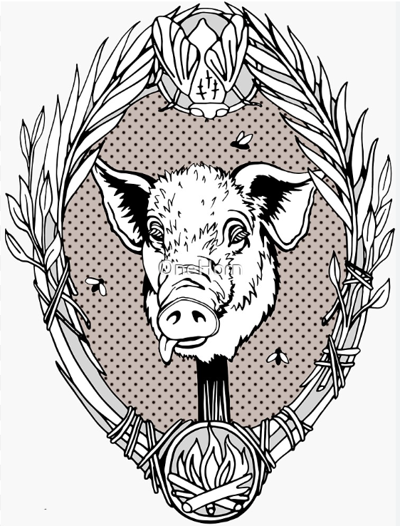
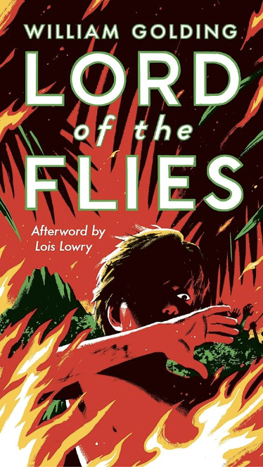
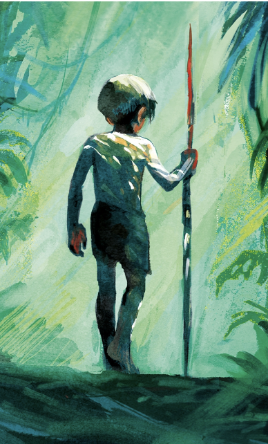

Lord of the Flies: Simon's Murder
Simon's brutal murder in William Golding's Lord of the Flies illustrates
fear as a driving force for violence. Simon was mistaken as the “beast”
during a barbaric ritual dance, resulting in a gruesome attack by the group
of boys. Almost as if the group had reverted to their animalistic instincts,
they “surged after [Simon], poured down the rock, leapt on to the beast,
screamed, struck, bit, tore” (Golding 214). The group was so scared of the
concept of a beast that they lost all rationality, blindly lashing out, despite
Simon’s pleas, in hopes of asserting control over their perceived threat. Through
the use of concise, monosyllabic language, Golding quickens the pace, heightening
the urgency and portraying the boys as consumed by fear. The vivid image of the attack
captures the intensity of their fear-induced violence, highly contrasting with their
supposed civilized upbringing. This stark juxtaposition underscores the transformative
power of fear, revealing how much of an influence it can have on human behavior.


